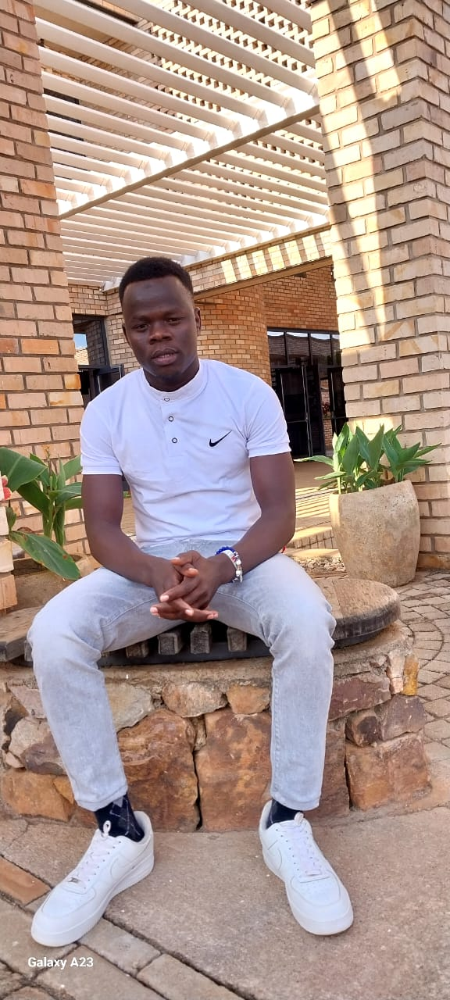

About Me
My name is Sabir Walid Abdurahman, and I was born and
raised in Sudan. I hail from a marginalized group, and my early life was
shaped by the unique challenges faced by individuals within this community.
My journey took a significant turn when I became a refugee at the tender age
of 17, and I continued to navigate this life-altering experience until the
age of 22 in South Sudan.
During my time as a refugee, I seized the opportunity to complete my secondary
school education. It was during this period that I meticulously documented some
of the prevailing challenges faced by the refugee community and, in particular,
the students among us. One issue that stood out prominently was the glaring
lack of access to higher education and the quality education that is so essential
for personal and community development.
To put it into perspective, consider the fact that every year, we saw between 270
to 350 students successfully graduate from secondary school. However, when it
came to pursuing higher education, the numbers were starkly different. Only a
mere fraction, roughly 10 to 15 students, managed to access university or college
opportunities. The vast majority of these bright, young minds were left with little
choice but to remain within the confines of our community, their dreams and
aspirations left unfulfilled and unattained.
It is this stark disparity, this heartbreaking reality, that has fueled my passion
and determination. My journey led me to the African Leadership University, where I
was fortunate to receive an education that opened up a world of possibilities. I now
find myself inspired and deeply committed to taking an active role in creating and
implementing an initiative that can effectively transform my community, providing
hope and opportunities where there was once despair. My aim is to make a meaningful
difference and empower those who have the potential to shape a brighter future.
Skills
- . Data Analytics
- . Front-End Development
- . Communication skills
- . Problem Solving
- . Teamwork
- . Leadership
- . Time Management
- . Atention to Detail
Work Experience
-
Data Collector
Append - China
Apr, 2023 - Aug, 2023
In my role as a data collector, I undertook the crucial task of gathering data from a wide array of sources. This included not only the collection process but also the responsibility of meticulously storing this valuable data in a database. However, my duties didn't end there. I was also entrusted with the task of performing data analysis, an essential step in transforming raw data into meaningful insights. In addition to collecting and analyzing data, another aspect of my role involved the preparation of comprehensive reports. These reports were designed to encapsulate the findings and trends derived from the data, offering a clear and insightful perspective to guide decision-making processes. Upon their completion, I diligently submitted these reports to my supervisor, providing them with valuable information and insights to inform strategic decisions and actions. One significant aspect of this experience was the fact that it marked my first foray into remote work. This transition brought its own set of unique challenges and opportunities. Working remotely, I found myself adapting to new tools, communication methods, and a more independent work environment. These adaptations, while initially presenting challenges, ultimately provided me with a valuable learning experience, enhancing my skills and capabilities in the field of data analytics.
-
Volunteer
Pan African Mathematics Olympiad - Rwanda
May, 1, 2023 - May, 22, 2023
During my time volunteering at the Pan African Mathematics Olympiad, my responsibilities encompassed guiding students throughout their competitions, as well as meticulously evaluating and marking their examination papers. This experience not only allowed me to contribute to the growth and development of young mathematicians but also provided me with a deeper understanding of the challenges and aspirations of the students within this academic sphere.
-
Data Entry Assistant
Internation Rescue Committee - South Sudan
Dec, 2021 - June, 2022
In my role as a data entry assistant in the Department of WASH (Water Sanitation and Hygiene), my primary responsibility was to oversee the comprehensive management of data within the department. This entailed meticulously collecting, organizing, and inputting data from various sources, all with the overarching goal of maintaining the integrity and accuracy of our information repository. Ensuring that every piece of data was managed with precision was of paramount importance to us, as it directly contributed to the overall effectiveness and success of our department's initiatives. Additionally, I was tasked with the crucial duty of regularly reviewing and updating the existing data to guarantee that it remained current and relevant. By doing so, we ensured that our decision-makers had access to the most accurate and up-to-date information, enabling them to make informed choices that would have a positive impact on the vital areas of water sanitation and hygiene. My role as a data entry assistant was not merely administrative; it was integral to the department's mission of improving access to clean water and promoting hygiene, underlining the significance of data accuracy in our noble pursuit.
-
Water Operator
Samaritan Purse - South Sudan
Apr, 2020 - Dec, 2021
Operating the water system in the boreholes and submitting reports to the supervisor on the water quality and quantity
Education
-
Bachelor Degree
African Leadership University - Rwanda
2022 - Present
-
Certificate
Soba Secondary School - South Sudan
2017 - 2021
-
Certificate
Kauda Primary School - Sudan
2008 - 2016
Projects
-
AirBnB_Clone
This is the project we worked on in team of two where all the development and testing was runned over an operating system Ubuntu 20.04 LTS using programming language Python 3.8.3. The editors we used were VIM 8.1.2269, VSCode 1.6.1 and Atom 1.58.0 . Control version using Git 2.25.1.
-
EMPOWERING REFUGEES WITH TECHNICAL SKILLS(ERTS) Initiative
This is my personal project that I am currently working on. It is a transformational program dedicated to equipping refugees with essential technical skills to enhance their livelihoods. This program aims to address the unique challenges faced by refugees by providing them with access to quality education and training in various technical fields such as computer programming, vocational skills, and digital literacy. Through partnership with educational institutions, government, NGOs, and industrial leaders, this initiative offers refugees opportunities to acquire the valuable skills that not only improve their employment prospects but also empower them to contribute to the societies and foster self-reliance and independence to break down the barriers and create a more inclusive and equitable future for refugees.